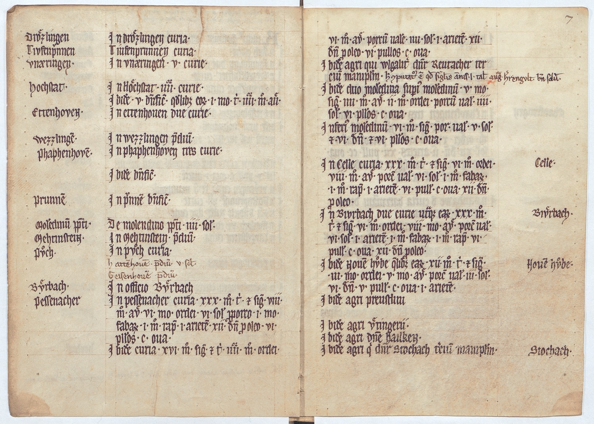

BayHStA, KL Benediktbeuern, 32 fol. 6v-7r



Kommentar
Editor: katharina.wolff@textgrid.de
Archiv: BayHStA
Bestand: KL Benediktbeuern
Signatur: 32 fol. 6v-7r
Ort: Benediktbeuern
Datum: ca. 1279
Schlagwort: Stiftbuch
Schwierigkeitsgrad: mittel
Kurzbetreff:
Auszug aus einem Stiftbüchlein des Klosters Benediktbeuern
Auszug aus einem Stiftbüchlein des Klosters Benediktbeuern
Schreiberhände:
- Schreiber1 (S1)
- Nachträge von anderer Hand (S2)
- spätere Foliierung (S3)
Kommentar:
Der Begriff "Stiftbuch" wurde im Spätmittelalter synonym für "Urbarbuch" oder "Salbuch" verwendet, d.h. ein Stiftbuch enthält ein Verzeichnis liegender Güter und nutzbarer Rechte. Es wurde zur Kontrolle der jährlichen Abgaben und zur Sicherung von Eigentum und Besitzstand angelegt.
Auf den hier ausgewählten Seiten finden sich Angaben über dem Kloster zugehörige Höfe und Grundstücke, Geld-, Vieh-, Eier- und Getreideabgaben (Gerste, Weizen und Winterweizen).
Gotische Minuskel (Textura) mit späteren Ergänzungen von mindestens einer anderen Hand.
Der Schreiber benutzt gelegentlich u und v für den jeweils anderen Lautwert (z.B. in vvlgariter oder ettenhouen).
Der Begriff "Stiftbuch" wurde im Spätmittelalter synonym für "Urbarbuch" oder "Salbuch" verwendet, d.h. ein Stiftbuch enthält ein Verzeichnis liegender Güter und nutzbarer Rechte. Es wurde zur Kontrolle der jährlichen Abgaben und zur Sicherung von Eigentum und Besitzstand angelegt.
Auf den hier ausgewählten Seiten finden sich Angaben über dem Kloster zugehörige Höfe und Grundstücke, Geld-, Vieh-, Eier- und Getreideabgaben (Gerste, Weizen und Winterweizen).
Gotische Minuskel (Textura) mit späteren Ergänzungen von mindestens einer anderen Hand.
Der Schreiber benutzt gelegentlich u und v für den jeweils anderen Lautwert (z.B. in vvlgariter oder ettenhouen).
Entzifferung
(Absatz Beginn)
1 (Schreiber1:) Drzlingen(Links nachgetragener Text)In drzlingen curia.
2 Tivfenp(r)vnnen(Links nachgetragener Text)Tiufenprunnen curia.
3 Vnaeringen.(Links nachgetragener Text)In vnaeringen .v. curie.
4 Hochstat.(Links nachgetragener Text)In Hchstat .iiii. or curie.
5 Ibide(m) .v. b(e)n(e)fic(ia) q(uo)dlib(et) eo(rum) .i. mo(dium). t(ritici) .iiiior. mo(dios).au(en)e
6 EttenhoveN.(Links nachgetragener Text)In ettenhouen due curie.
7 Wezzlinge(n).(Links nachgetragener Text)In wezzlingen p(re)diu(m).
8 Phaphenhove(n).(Links nachgetragener Text)In phaphenhoven tres curie.
9 Ibide(m) b(e)n(e)fic(ium).
10 Prunne(n)(Links nachgetragener Text)In p(r)vnne(n) b(e)n(e)fic(ium).
11 Mole(n)dinu(m) p(re)p(osi)ti (Links nachgetragener Text)De molendino p(re)p(osi)ti .iiii. sol(idos)
12 MehtinsteiN.(Links nachgetragener Text)In Mehtinstein. p(re)diu(m)
13 Pch.(Links nachgetragener Text)In pch curia.
14 (Nachträge von anderer Hand:) hatte(n)houe(n). p(re)diu(m) v. sol(idos)
15 Geisenhoue(n) p(re)diu(m).a)
16 (Schreiber1:) Berbach.(Links nachgetragener Text)In officio Brbachb)
17 Pessenacher (Links nachgetragener Text)In pessenacher curia .xxx. mo(dios). t(ritic)i. (et) si(li)g(inis). viii.
18 mo(dios). av(en)e .vi. mo(dios) ordei .vi. sol(idos) p(ro) porco .i. mo(dium)
19 faba(rum) .i. mo(dium) rap(ularum) .i. ariete(m) .xii. d(e)n(arios) p(ro) oleo .vi.
20 p(u)llos .c. oua.
21 Ibide(m) curia .xvi. mo(dios). si(li)g(inis). (et) t(ritic)i .iiiior. mo(dios). ordei.
//(Seitenumbruch)
22 vi. mo(dios) av(en)e porcu(m) ual(or)e .iiii. sol(idorum) .i. ariete(m) .xii.(spätere Foliierung:) 7(Rechts nachgetragener Text)c)
23 (Schreiber1:) d(e)n(arios) p(ro) oleo .vi. pullos .c. oua.
24 Ibide(m) agri qui vvlgalit(er) d(icu)n(tu)r Reutacher ter/
25 ciu(m) manip(u)l(u)m. (Nachträge von anderer Hand:) h(oc) (com)putat(um) e(st) q(uo)d si(n)g(u)lis an(n)is .I. tal(entum) aug(ustanum) h(er)rengvlt bene solu(i)td)
26 (Schreiber1:) Ibide(m) duo mole(n)dina sup(er)i(us) mole(n)dinu(m) .v. mo(dios).
27 si(li)g(inis) .iiii. mo(dios). av(en)e ii. mo(dios). ordei. porcu(m) ual(ore) .iiii.
28 sol(idorum) .vi. p(u)llos .c. oua.
29 Inferi(us) mole(n)dinu(m) .vi. mo(dios) si(li)g(inis) por(cum) ual(ore) .v. sol(idorum)
30 (et) .vi. d(e)n(arios). (et) .vi. p(u)llos .c. oua.
31 In Celle curia .xxx. mo(dios). t(ritic)i. (et) si(li)g(inis) .vi. mo(dios). ordei.Celle.(Rechts nachgetragener Text)
32 viii. mo(dios). av(en)e porc(um) ual(ore) .vi. sol(idorum). .i. mo(dium). faba(rum).
33 .i. mo(dium). rap(ularum) .i. ariete(m) .vi. pull(os) .c. oua .xii. d(e)n(arios).
34 p(ro) oleo.
35 In Bivrbach due curie ut(r)aq(ue) ea(rum) .xxx. mo(dios).Birbach.(Rechts nachgetragener Text)
36 t(ritic)i. (et) si(li)g(inis) .vi. mo(dios). ordei .viii. mo(dios) av(en)e. porc(um) ual(ore)
37 vi. sol(idorum) .i. ariete(m). .i. mo(dium). faba(rum) .i. mo(dium). rap(ularum) .vi.
38 pull(os) .c. oua .xii. d(e)n(arios) p(ro) oleo.
39 Ibide(m) Noue(m) hbe q(ue)lib(et) ea(rum) .xii. mo(dios). t(ritic)i. (et) si(li)g(inis) Noue(m) hbe (Rechts nachgetragener Text)
40 .iii. mo(dios). ordei .v. mo(dios) av(en)e porc(um) ual(ore) .iii. sol(idos)
41 vi. d(e)n(arios) .v. pull(os) .c. oua .i. ariete(m).
42 Ibide(m) agri preustlini
43 Ibide(m) agri tingerii.
44 Ibide(m) agri d(omi)ne HailkeN.
45 Ibide(m) agri q(u)i d(icu)n(tu)r Stochach t(er)ciu(m) manip(u)l(u)m.Stochach.(Rechts nachgetragener Text)
(Absatz Ende)
a) diese beiden Zeilen wurden später nachgetragen
b) hier wurde am Rand "Byerbach"(Textzitat), im Text aber "Bverbach"(Textzitat) geschrieben
c) Foliierung von späterer Hand
d) diese Zeile wurde später ergänzt
Transkription
(Absatz Beginn)
1 (Schreiber1:) Drzlingen(Links nachgetragener Text)In Drzlingen curia.
2 Tiufenprunnen (Links nachgetragener Text)Tiufenprunnen curia.
3 Unaeringen.(Links nachgetragener Text)In Unaeringen .v. curie.
4 Hochstat.(Links nachgetragener Text)In Hchstat .iiii. or curie.
5 Ibidem V beneficia quodlibet eorum I modium tritici IIIIor. modios auene
6 Ettenhoven(Links nachgetragener Text)In Ettenhoven due curie.
7 Wezzlingen(Links nachgetragener Text)In Wezzlingen predium
8 Phaphenhoven(Links nachgetragener Text)In Phaphenhoven tres curie.
9 Ibidem beneficium.
10 Prunnen(Links nachgetragener Text)In Prunnen beneficium.
11 Molendinum prepositi(Links nachgetragener Text)De molendino prepositi IIII solidos
12 Mehtinstein(Links nachgetragener Text)In Mehtinstein predium
13 Pch.(Links nachgetragener Text)In Pch curia.
14 (Nachträge von anderer Hand:) Hattenhouen predium V solidos
15 Geisenhouen prediuma) .
16 (Schreiber1:) Berbach.(Links nachgetragener Text)In officio Brbachb)
17 Pessenacher (Links nachgetragener Text)In Pessenacher curia XXX modios tritici et siliginis VIII
18 modios avene VI modios ordei VI solidos pro porco I modium
19 fabarum I modium rapularum I arietem XII. denarios pro oleo VI
20 pullos C ova.
21 Ibidem curia XVI modios siliginis et tritici IIIIor modios ordei.
//(Seitenumbruch)
22 VI modios avene porcum valore IIII solidorum I arietem) XII (spätere Foliierung:) 7(Rechts nachgetragener Text)c)
23 denarios pro oleo VI pullos C ova.
24 Ibidem agri qui vulgaliter dicuntur Reutacher ter-
25 cium manipulum. (Nachträge von anderer Hand:) hoc computatum est quod singulis annis I talentum augustanum herrengult bene solvitd)
26 Ibidem duo molendina superius molendinum V modios
27 siliginis IIII modios avene II modios ordei porcum valore IIII
28 solidorum VI pullos C ova
29 Inferius molendinum VI modios siliginis porcum valore V solidorum
30 et VI denarios et VI pullos C ova
31 In Celle curia XXX modios tritici et siliginis VI modios ordei Celle.(Rechts nachgetragener Text)
32 VIII modios avene porcum valore VI solidorum I modium fabarum
33 I modium rapularum I arietem VI pullos C ova XII denarios
34 pro oleo
35 In Biurbach due curie utraque earum XXX modios Birbach.(Rechts nachgetragener Text)
36 tritici et siliginis VI modios ordei VIII modios avene porcum valore
37 VI solidorum I arietem I modium fabarum I modium rapularum VI
38 pullos C ova XII denarios pro oleo
39 Ibidem Novem hbe quelibet earum XII modios tritici et siliginis Nove(m) hbe(Rechts nachgetragener Text)
40 III modios ordei V modios avene porcum valore III solidos
41 VI denarios V pullos C ova I arietem
42 Ibidem agri Preustlini
43 Ibidem agri tingerii.
44 Ibidem agri domine Hailken
45 Ibidem agri qui dicuntur Stochach tercium manipulum Stochach(Rechts nachgetragener Text)
(Absatz Ende)
a) diese beiden Zeilen wurden später nachgetragen
b) hier wurde am Rand "Byerbach"(Textzitat), im Text aber "Bverbach"(Textzitat) geschrieben
c) Foliierung von späterer Hand
d) diese Zeile wurde später ergänzt